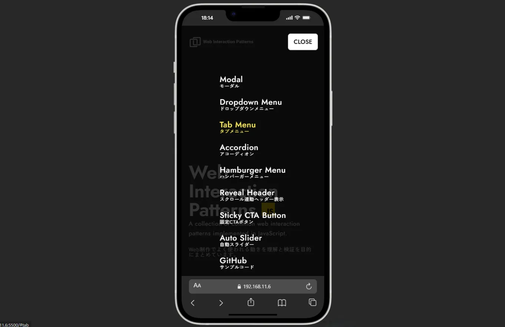

ボタンをクリックするとモーダルが表示されます。
- 閉じるボタン、Escapeキー、背景クリックで閉じることができます。
- モーダル表示中は背景スクロールが無効化されます。
- GSAPを使用して開閉時のアニメーションを実装しています。
A collection of common web interaction patterns implemented in JavaScript.
Web制作でよく使われる動きを理解と検証を目的にまとめています。
ボタンをクリックするとモーダルが表示されます。
ボタンをクリックするとドロップダウンメニューがボタンの下に表示されます。
行く川のながれは絶えずして、しかも本の水にあらず。よどみに浮ぶうたかたは、かつ消えかつ結びて久しくとゞまることなし。世の中にある人とすみかと、またかくの如し。玉しきの都の中にむねをならべいらかをあらそへる、たかきいやしき人のすまひは、代々を經て盡きせぬものなれど、これをまことかと尋ぬれば、昔ありし家はまれなり。或はこぞ破れ（やけイ）てことしは造り、あるは大家ほろびて小家となる。住む人もこれにおなじ。（青空文庫より）
親譲りの無鉄砲で小供の時から損ばかりしている。小学校に居る時分学校の二階から飛び降りて一週間ほど腰を抜かした事がある。なぜそんな無闇をしたと聞く人があるかも知れぬ。別段深い理由でもない。新築の二階から首を出していたら、同級生の一人が冗談に、いくら威張っても、そこから飛び降りる事は出来まい。弱虫やーい。と囃したからである。小使に負ぶさって帰って来た時、おやじが大きな眼をして二階ぐらいから飛び降りて腰を抜かす奴があるかと云ったから、この次は抜かさずに飛んで見せますと答えた。（青空文庫より）
タブをクリックすると各該当のコンテンツが表示されます。
こちらに回答が入ります。親譲りの無鉄砲で小供の時から損ばかりしている。小学校に居る時分学校の二階から飛び降りて一週間ほど腰を抜かした事がある。なぜそんな無闇をしたと聞く人があるかも知れぬ。別段深い理由でもない。（青空文庫より）
こちらに回答が入ります。親譲りの無鉄砲で小供の時から損ばかりしている。小学校に居る時分学校の二階から飛び降りて一週間ほど腰を抜かした事がある。なぜそんな無闇をしたと聞く人があるかも知れぬ。別段深い理由でもない。新築の二階から首を出していたら、同級生の一人が冗談に、いくら威張っても、そこから飛び降りる事は出来まい。弱虫やーい。と囃したからである。小使に負ぶさって帰って来た時、おやじが大きな眼をして二階ぐらいから飛び降りて腰を抜かす奴があるかと云ったから、この次は抜かさずに飛んで見せますと答えた。（青空文庫より）
質問事項をクリックすると回答部分が開閉します。

ヘッダー右にある「MENU」ボタンをクリックするとナビゲーションメニューがモーダルで表示されます。
ボタンをクリックするとドロップダウンメニューが表示されます。
ボタンをクリックするとドロップダウンメニューが表示されます。